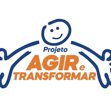

Nossa Identidade e Atuação
ONG REVIVER RECICA é uma organização sem fins lucrativos que atua com um propósito claro de transformação social, oferecendo suporte e oportunidades a crianças e adolescentes em situação de vulnerabilidade. Desde sua fundação, em 8 de setembro de 2005, a ONG se dedica a promover o desenvolvimento humano por meio de atividades educativas, artísticas, culturais e esportivas, visando um futuro melhor para as novas gerações. Sua identidade está fortemente alicerçada na crença de que a educação e a inclusão social são as chaves para romper ciclos de exclusão e violência. Com sede em São Paulo, a organização atende cerca de 250 crianças e adolescentes de 1 a 14 anos, oferecendo não apenas aprendizado, mas também acolhimento e orientação. Este apoio vai além do convencional, buscando sempre envolver a família e a comunidade local no processo de transformação..
Cursos e aulas
conheça nossos programas oferecidos
Explore nossos cursos e aprimore seus conhecimentos! Oferecemos diversas opções de aprendizado, com conteúdos atualizados e voltados para o desenvolvimento profissional e pessoal.
Ballet
Como parte do nosso compromisso com a formação integral de crianças e adolescentes, nossa ONG também oferece aulas de ballet como uma atividade artística e educativa que contribui para o desenvolvimento físico, emocional e social dos participantes. O ballet é uma das formas mais tradicionais e expressivas de dança, combinando disciplina, técnica e sensibilidade artística. Nossas aulas são adaptadas para diferentes faixas etárias e níveis de experiência, valorizando o ritmo de cada aluno e proporcionando um ambiente acolhedor, respeitoso e motivador. Por meio da prática regular, os alunos desenvolvem coordenação motora, postura, equilíbrio, concentração, musicalidade e, principalmente, autoconfiança. As aulas também estimulam o trabalho em grupo e a perseverança, promovendo valores essenciais para a vida em sociedade. Mais do que aprender passos e coreografias, o ballet aqui é uma experiência de expressão corporal, criatividade e empoderamento. Nossos profissionais trabalham com carinho e técnica, promovendo não só o aprendizado da dança, mas também o fortalecimento da autoestima e o sentimento de pertencimento. Ao incluir o ballet em nossas atividades, reafirmamos o papel da arte na formação de cidadãos mais sensíveis, conscientes e confiantes.
Karatê

Entre as atividades promovidas pela nossa ONG, destacamos o karatê como uma importante ferramenta de formação física e emocional para crianças, adolescentes e jovens da comunidade. Mais do que uma arte marcial, o karatê é um caminho de autoconhecimento, disciplina e respeito mútuo. Nossas aulas são ministradas por profissionais qualificados, que aplicam metodologias acessíveis e adaptadas a cada faixa etária e nível de experiência. O karatê contribui diretamente para o desenvolvimento da coordenação motora, equilíbrio, agilidade, concentração e confiança dos alunos. Além dos benefícios físicos, o karatê também trabalha valores fundamentais como respeito, persistência, autocontrole, trabalho em equipe e responsabilidade. Cada treino é uma oportunidade para os alunos superarem desafios, construírem autoestima e entenderem o valor do esforço contínuo. Em um ambiente seguro e acolhedor, promovemos o karatê não como forma de confronto, mas como prática educativa e transformadora. Essa arte marcial é uma poderosa aliada na inclusão social e no fortalecimento de vínculos entre os participantes, incentivando o desenvolvimento pessoal e coletivo. Com o karatê, nossa ONG reforça o compromisso de oferecer atividades que cultivem corpo, mente e espírito — promovendo o bem-estar, a disciplina e a formação de cidadãos conscientes.
Capoeira

Oferecemos aulas de capoeira como parte das atividades culturais e esportivas voltadas para crianças, adolescentes e a comunidade em geral. A capoeira é uma expressão cultural brasileira que une arte marcial, esporte, dança, música e tradições populares em uma prática rica e envolvente. Mais do que uma atividade física, a capoeira é uma ferramenta de inclusão social, que promove o respeito, o trabalho em grupo e o fortalecimento da identidade cultural. Por meio dos movimentos, do canto e dos instrumentos como o berimbau e o atabaque, os participantes desenvolvem coordenação motora, disciplina, autoestima e senso de pertencimento. As aulas são conduzidas por mestres experientes, que valorizam a oralidade e a tradição como formas de ensino. As rodas de capoeira se tornam espaços de convivência, aprendizado e construção de vínculos entre os alunos, mestres e a comunidade. Ao oferecer capoeira, nossa ONG reafirma o compromisso com a formação cidadã, a valorização da cultura afro-brasileira e a promoção da inclusão através da arte e do movimento.
Reforço e alfabetização
Também oferecemos serviços de alfabetização e reforço escolar, com foco no desenvolvimento integral das habilidades de leitura, escrita e raciocínio lógico. Nosso objetivo é apoiar crianças e adolescentes que enfrentam dificuldades no processo de aprendizagem, proporcionando acompanhamento individualizado e estratégias pedagógicas eficazes. As atividades são conduzidas em um ambiente seguro, acolhedor e estimulante, onde cada aluno é respeitado em seu ritmo e estilo de aprendizagem. Utilizamos metodologias ativas e recursos lúdicos, que tornam o aprendizado mais envolvente e significativo. Além disso, buscamos fortalecer a autoestima dos alunos e promover a autonomia nos estudos, contribuindo para uma formação sólida e confiante. Nosso compromisso é garantir que o aprendizado seja acessível, eficiente e prazeroso para todos.
Patrocinadores e colaboradores
Conheça nossos patrocinadores e colaboradores que tornam nosso trabalho possível! Agradecemos a cada um deles por acreditarem em nossa missão e contribuírem para a transformação social.

O Instituto Espírita passou a atuar em projetos educacionais nas áreas doutrinária e filantrópica, oferecendo cursos para a formação espírita e assistência caridosa aos necessitados.
Fundada em 1912, a ITW é uma empresa industrial global com um modelo de negócios próprio e diferenciado. Atua em sete segmentos líderes, gerando crescimento sólido e altos retornos. A empresa busca desempenho superior a longo prazo, consolidando-se como uma das mais respeitadas e eficientes do setor industrial.
O Projeto Agir e Transformar é uma iniciativa social que promove melhorias em comunidades por meio de ações socioeducativas e ambientais. Em São Paulo, beneficia mais de mil famílias com investimentos em habitação. Seu foco é a inclusão social e o desenvolvimento sustentável.
O Projeto Bimba é uma iniciativa comunitária onde professores de capoeira oferecem aulas para crianças e jovens da comunidade. O objetivo é promover a prática da capoeira como forma de educação, disciplina e integração social. As aulas acontecem dentro dos projetos sociais locais. É uma ação que valoriza a cultura e fortalece vínculos comunitários.

O Malinhas de Amor é uma ação social que doa enxovais completos para gestantes em situação de vulnerabilidade. O projeto visa acolher e apoiar mamães carentes no início da maternidade, promovendo solidariedade e cuidado. As doações incluem itens essenciais para o bebê e ajudam a proporcionar um começo mais digno e seguro para as famílias beneficiadas.
Doações
Se você deseja ajudar a ONG REVIVER, considere fazer uma doação! Sua contribuição é fundamental para continuarmos nosso trabalho e impactar positivamente a vida de crianças e adolescentes em situação de vulnerabilidade.
Aqui vai uma lista das formas que aceitamos contribuições:
Doações
Você pode fazer uma doação em dinheiro diretamente em nossa conta bancária via pix!
Nossa chave é: ongrecica@gmail.com
- Alimentos perecíveis e não perecíveis
- Materiais de higiene e limpeza
- Materiais escolares
- Livros de leitura
- Brinquedos
- Roupas novas e em bom estado
- Materiais esportivos
- Doações de móveis e eletrodomésticos para casa
Contato
-
Quer acessar alguma rede social nossa? Basta clicar no ícone e você será direcionado!
-

-

-